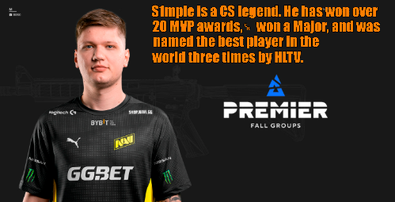
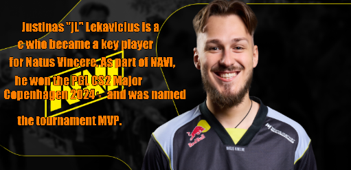

cyber sport




The best CS:GO players are known for their incredible shooting skills, unique vision of the game, and the ability to make lightning-fast decisions under pressure. Some of them, like legendary Ukrainian s1mple and Frenchman ZywOo, are considered some of the best in the history of the discipline. Thanks to talent, hard training, and teamwork, these esports players have won numerous MVP awards and titles at the world's largest tournaments. Their gaming careers have influenced the development of the entire esports scene and inspired millions of players.